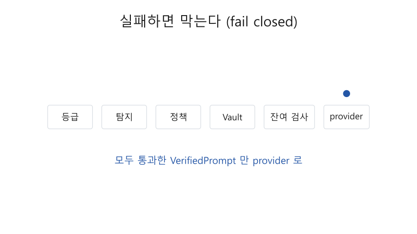

Prompt Airlock
- 공공기관이 외부 LLM 을 쓸 때 개인정보가 밖으로 나가지 않게 하는 한국어 보안 게이트웨이
- 지금까지: 입력부터 응답까지 끝까지 동작하는 MVP 와 시연
C++23 게이트웨이 + Rust Vault · 2026 중간 발표
문제
- 업무 질문에 이름·전화·주민번호가 섞여 외부 LLM 으로 그대로 나간다
- 지우기만 하면 질문의 뜻이 망가진다 → 가명으로 바꿔 보내고 답에서 되돌려야 한다
- 공공기관 지침: 입력·응답의 민감정보 탐지·차단, 정해진 형식만 외부 전송
근거: 국가정보원 외부 언어모델 보안 가이드라인(2023), 국가망 보안체계(N2SF)
이미 있는 구조 ① LiteLLM 프록시
- Chat Completions 호환 프록시 하나로 여러 provider 를 중계
- 가드레일 훅: pre_call(요청 전), post_call(응답 뒤), logging_only
- PII 마스킹은 Presidio 를 별도 서비스로 불러서 처리, output_parse_pii 로 답의 자리표시자를 되돌림
출처: LiteLLM 공식 문서 Guardrails › PII Masking (Presidio)
이미 있는 구조 ② Presidio
- Analyzer: 정규식·체크섬·NER recognizer 로 개인정보 위치를 찾음
- Anonymizer: 치환·마스킹·해시·암호화 등으로 바꿈
- 언어는 설정으로 정함(LiteLLM 기본 en). 한국어 형식(주민번호, 국내 계좌·전화)은 직접 추가해야 함
출처: microsoft/presidio 저장소와 문서
같은 문제, 다른 선택
| 항목 | LiteLLM + Presidio 가드레일 | Prompt Airlock |
|---|---|---|
| 목표 | 범용 프록시에 붙이는 선택 기능 | 공공기관 외부 전송 통제 전용 |
| 한국어 | 언어 설정·recognizer 추가로 확장 | 국내 형식표 + 한국어 NER 내장 |
| 가명 | 자리표시자 치환 | 요청마다 무작위 token, 별도 Rust Vault 프로세스에만 매핑 |
| 실패 때 | 문서에 명시 없음 | 탐지·Vault·잔여 검사 실패 = 거절, provider 호출 0 |
| 응답 | 자리표시자 되돌림 | 다시 탐지, 링크 속 token·바뀐 token 은 응답 거절 |
| 등급 | - | C·S 등급은 외부 전송 자체를 막음 |
내 설계
모든 단계를 통과해야만 provider 로 나간다.
하나라도 실패하면 막는다(fail closed).
입구
- TLS·출처 인증
- 등급 확인
보호
- 탐지(규칙 + 한국어 NER)
- Vault 가명(별도 프로세스)
- 잔여 검사
외부와 응답
- provider
- 응답 검사
- 같은 범위에서 복원
타입으로 막는 경계
- RawPrompt → PolicyChecked → Protected → VerifiedPrompt
- provider 요청은 VerifiedPrompt 로만 만들 수 있음(어기면 컴파일 실패)
- 바뀐 token 은 비슷해도 복원하지 않음

시연
- 등급 S → 403
- 주민번호·카드 → 400, 종류만 알림
- 이름·전화·이메일 → token 으로 나가고 복원
- 링크 속 token → 응답 거절
- base64 로 감싼 주민번호 → 400
- 바뀐 token → 복원 안 함

검증 결과
| 시험 | 319개 통과, sanitizer·fuzz(요청 JSON 60초 488만 회 등) |
| NER | 사람 재현율 0.987, 기관 0.910, 256 token p95 30 ms (#108) |
| 모델 교체 검토 | 후보 2개 4 구성 측정, 지연 10배 이상 → 지금 모델 유지 (#110) |
| 끝까지 지연 | NER 없이 4 KiB p95 5.8 ms, NER 포함 짧은 질문 p95 21.6 ms (#119) |
| 동시 8개 | 오류 0, 약 115 req/s (#119) |
| egress | 시연 6장면 모두 provider 기록에 원문 0 |
숫자 출처: github.com/robinhood0107/PromptAirlock 이슈 번호
한계와 다음 계획
- 가려지지 않은 이름 13/600(2.2%) → 기관 보호어 목록으로 보완
- 감사 기록·운영 기능 → 다음 단계
- 요청 단위 시간 상한·취소, 실제 provider 연결, 평가, 배포
감사합니다